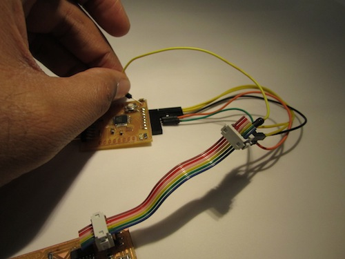
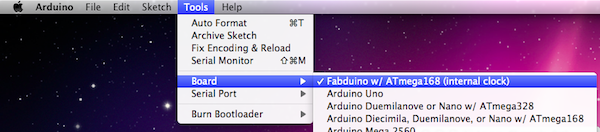
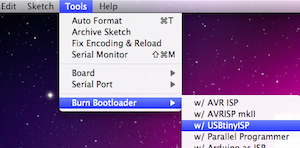

Fabkit i/o (aka Fabduino) is a Fabable Arduino Compatible Board.
Here are the latest Eagle board and schematic files
Here are the latest PNGs for use with the fab modules (note these did not work with latest fab modules when I last tried them): top, holes and outline
At minimum, you will need to solder the atmega168, button, resistors, capacitors, LED and FTDI Headers (top of board). You will probably also want to solder the 8 female headers to the bottom of the board (there are 9 pins on the bottom of the board, but the right most one is RESET and is only needed once for programming the bootloader. You can solder a wire to it directly or just hold a wire during initial programming - more below)
There is an optional 8mhz resonator (16mhz also works but requires different bootloader/fuse settings). This is probably the only non-standard inventory part, but is similar to the 20mhz resonator. The digikey part number is 535-10004-1-ND. This resonator is not needed for most applications but if you want to use servo motors or do faster serial communication, it will be necessary. You can always build the board without it and add it later.
The easiest way to get the bootloader onto the board is through the Arduino IDE (arduino.cc). There are different instructions depending on whether you used the external 8mhz resonator as described above
The built in board configurations will not work with this setup, so you will have to use the custom boards.txt file (file and below instructions provided by Dave Mellis)
The file should be placed in a sub-folder (e.g. "fabduino") of a folder called "hardware" which needs to be created with a user's Arduino sketchbook folder (whose location can be found in the preferences dialog of the Arduino IDE). By default, this would be:
Windows: My Documents/Arduino/hardware/fabduino/boards.txt
Mac OS X: Documents/Arduino/hardware/fabduino/boards.txt
Linux prompts for the sketchbook location.
Once the txt file is installed, restart the Arduino IDE if running.
You can use a number of standard ISP programmers, but we'll assume you are using Dave Mellis' FabISP (http://fab.cba.mit.edu/content/projects/fabisp/). You need to connect the ISP pins (5V, GND, SCK, MISO, and MOSI) from the FabISP to the Fabkit/Fabduino board (see eagle file for pinouts - but they are on the bottom pins you should have soldered the female headers to above). You can solder a wire from the RESET pin (right most pin on bottom of fabkit/fabduino) to the RESET pin on the FabISP or just hold the wire there during programming.
Once the ISP pins are connected and FabISP plugged into your computer, go to "Tools->Board" in the Arduino IDE and pick the Fabduino w/168 (Internal Clock) and then pick "Tools->Burn Bootloader" and pick "USBTinyISP". If you are holding the RESET pin make sure you have it in place before clicking the USBTinyISP.
 That's it. If all goes well, you should have a usable Arduino. You can program it with the arduino software by choosing board: Fabduino w/168 (Internal Clock) and your serial port (FTDI cable or breakout).
IMPORTANT NOTE: FTDI header is the reverse of the normal, so your cable or breakout should be upside down. If in doubt, check the pinout in the eagle files.
Same as above except you don't need to install the boards.txt file and you can use the "Arduino Pro or Pro Mini (3.3V - 8mhz) w/ATMega168" setting.
{kind=link}
{kind=link}
{kind=link}